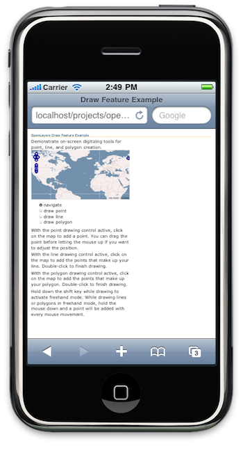
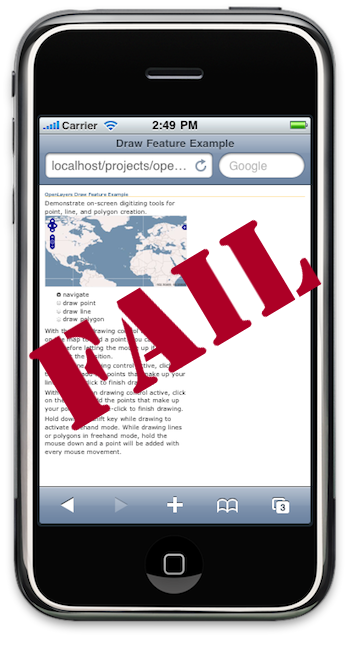
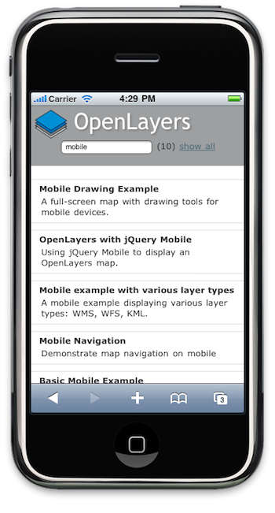

OpenLayers Mobile
- Tim Schaub (OpenGeo)
- Eric Lemoine (Camptocamp)
Flashback
State of the art circa 2006

OpenLayers 2.10
State of the art circa 2006
State of the art circa 2006
5 Years Later
OpenLayers 2.10, Meet iPhone

OpenLayers 2.10, Meet iPhone

Lausanne Code Sprint

So what's new?
Touch events support across the library!
- Pan and zoom the map
- Draw, select, drag, and modify vector features
- Geolocation
More general advances:
- Increased pan performance
- Improved User Experience (kinetic dragging)
- Reduced library size
Controls and Handlers
New:
OpenLayers.Handler.Pinch
OpenLayers.Control.PinchZoom
OpenLayers.Control.TouchNavigation
OpenLayers.Control.Geolocate
Extended:
OpenLayers.Handler.Drag
OpenLayers.Handler.Click
OpenLayers.Handler.Point|Path|Polygon
OpenLayers.Handler.Feature
OpenLayers.Control.Navigation
OpenLayers.Control.PanZoomBar
OpenLayers.Control.DragFeature
Design choice
One Web? Responsive Web Design?
Still unclear...
OpenLayers isn't opinionated, OpenLayers provides both
- touch-specific controls
- controls that work with both the mouse and touches
What you get out of the box

Integration
Combine OpenLayers with a mobile-specific widget framework to
get native looking apps.
Integration - jQuery Mobile

Integration - Sencha Touch
Web Mobile Development
... is hard!
Designing UIs is hard
Writing cross-browser code is hard
- Android comes in many flavors...
Web Mobile Development
Debugging is hard
- Poor debugging tools
- No good emulator for Android
- Remote console is your best bet (jsconsole)
- The future: remote debugging
Developing fast apps is hard
- CPU, memory and network resources are limited
Specific practices needed: http://www.w3.org/TR/mwabp/
It has good aspects too

And it's fun
Looking ahead...